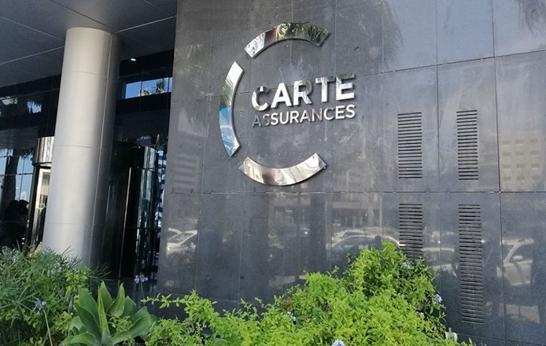

CARTE fut créée en 1976, par le Groupe BNP et le Groupe DOGHRI, en partenariat avec MGF et la Préservatrice. En 1986, sous l'impulsion de son Président du Conseil d'Administration actuel, Hassine DOGHRI, le Groupe DOGHRI en partenariat avec les Mutuelles du Mans ont pris le contrôle de CARTE. Aujourd'hui, forte de 45 années d'expérience, CARTE a su, grâce à ses équipes, son réseau d'agents généraux et ses partenaires, marquer de son empreinte le marché des risques de l'entreprise dans lequel elle est le leader, et développer une offre complète pour les besoins des particuliers.

Pour cantacter le directeur de cette assurance il faut appeler le numéro suivant: 99280688